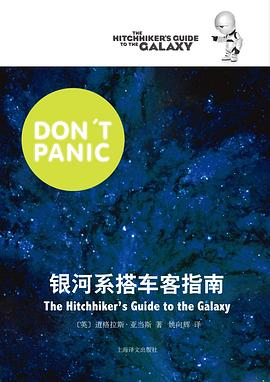
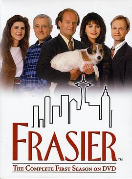
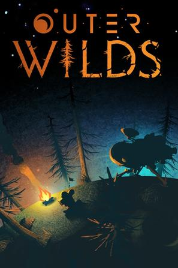
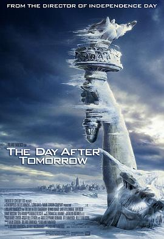
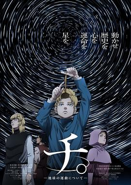
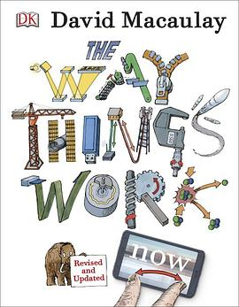
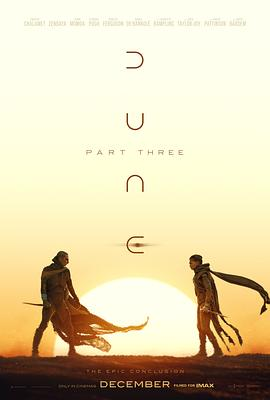
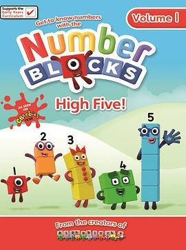

2026-02-23 04:35:07
豆瓣原页
想看 如何大赚一笔 / How to Make a Killing
2026-02-23 04:32:00
豆瓣原页

想读 银河系搭车客指南
2026-02-23 04:28:30
豆瓣原页
看过 极限审判 / Mercy ★★★★☆
也算是个高概念电影了，虽然感觉这个系统值得推广，但需要加一些mercy。系统权限过于强大，在实际生活中人类不可能控制这样的AI的。在开发AI的过程中确实还需要更多安全上的思考。
2026-02-23 04:22:39
豆瓣原页
看过 罗小黑战记 ★★★★☆
带上国产滤镜还是不错的。设定开始挺有意思的，到结尾开始离谱，硬是给主角套个光环，让他下一季还有技能放
2026-02-20 20:09:32
豆瓣原页
想看 三国第一部：争洛阳
《聊斋兰若寺》的片尾彩蛋，不错不错
2026-02-20 20:08:48
豆瓣原页
看过 聊斋：兰若寺 ★★★★☆
虽然每一个小故事都是不同导演，但是总体质量还不错，感觉追光动画算是稳定高质量产出了。虽然很多部分做的没到位，尤其是煽情，但是在国产动画里面来说绝对是数一数二的了。以后还支持你们 //白蛇的质量还不错啊，片尾有个这个片的预告
2026-02-18 14:25:26
豆瓣原页
想看 编舟记 / 舟を編む
2026-02-17 06:05:44
豆瓣原页
想读 第一性原理
2026-02-15 12:28:34
豆瓣原页
 看过 冰路营救 / The Ice Road ★★★★☆
看过 冰路营救 / The Ice Road ★★★★☆
设定非常有意思，但是剧情太扑朔迷离了，本来以为会有大量的卡车相关的难点要攻克，结果主要是人为问题。
2026-02-14 07:32:40
豆瓣原页

想看 欢乐一家亲 第一季 / Frasier Season 1
2026-02-11 19:40:18
豆瓣原页
在看 葬送的芙莉莲 第二季 / 葬送のフリーレン 第2期
在看了在看了，还是熟悉的配方，期待
2026-02-11 19:37:15
豆瓣原页
看过 我们仍未知道那天所看见的花的名字 / あの日見た花の名前を僕達はまだ知らない。 ★★★★☆
原来是2015年的，难怪滨边美波和村上虹郎的演出都那么稚嫩。保留了动画的片头和主题曲，这个值得一星，不过主题曲的主场好像不太一样，感觉上也挺不一样，还是喜欢原版。另外我看的这个版本没有片尾人员列表不知道怎么回事，以至于没有机会看是谁唱的。
2026-02-11 19:33:58
豆瓣原页
看过 全信没收 / The Rip ★★★★☆
电影的叙事改一下就好了，前面有点太无聊了，但是看到中间的话开始变得扑朔迷离起来，然后就开始越来越抓人了，结局还是挺让人满意的，虽然中规中矩。
2026-02-10 23:56:41
豆瓣原页
看过 死神来了：血脉诅咒 / Final Destination: Bloodlines ★★★★☆
虽然是炒冷饭，这次剧情还挺完整的，依然是熟悉的配方，重口味
2026-02-10 19:30:48
豆瓣原页
想看 惊蛰无声
2026-02-10 19:28:52
豆瓣原页
想看 夜王
听说要看3级版
2026-02-10 19:26:38
豆瓣原页
 想看 镖人：风起大漠
想看 镖人：风起大漠
2026-02-10 19:26:16
豆瓣原页
 想看 飞驰人生3
想看 飞驰人生3
2026-02-07 21:55:56
豆瓣原页
看过 辐射 第二季 / Fallout Season 2 ★★★☆☆
这一季节奏有点慢哎，总体一般吧，下一季感觉更精彩
2026-02-07 21:53:31
豆瓣原页
 看过 南京照相馆 ★★★★☆
看过 南京照相馆 ★★★★☆
确实是个好本子，拍的也不错，可以和地道战、地雷战的片子相提并论
2026-02-07 13:14:53
豆瓣原页
想看 机械师2：复活 / Mechanic: Resurrection
2026-02-07 13:14:23
豆瓣原页
想看 机械师 / The Mechanic
2026-02-05 07:07:22
豆瓣原页

想玩 星际拓荒 Outer Wilds
评分这么高（来自《Blue Prince》的评论区
2026-02-04 21:48:02
豆瓣原页
看过 阿凡达：火与烬 / Avatar: Fire and Ash ★★★★☆
这次没彩蛋有点略失望。剧情有点和2过于接近，主要剧情都还是在水上完成的，出来了很多新的设定真的只是设定一下，实际上并没有对剧情上有太多帮助，比如飞天族和另一派火族。另，Eva太万能了吧。。。
2026-02-04 21:44:55
豆瓣原页
想看 越狱 / Prison Break
属实活久见，完结这么多年的都能重启
2026-02-01 16:50:50
豆瓣原页
看过 大风杀 ★★★☆☆
总体来说还行，但是看下来感觉还是有些离谱。本身设定很有意思，在一个与世隔绝的地方，然后发生一些警匪拉扯，但是总觉得没有很精彩，可能是对话戏太多了？
2026-01-31 11:50:36
豆瓣原页
看过 731 ★☆☆☆☆
这是认真拍的么，AI写的剧本都比这个精彩。真的是看困我了，多好的题材，拍成这个屎样。在我看来用《三体》的团多来拍都不为过。
2026-01-31 07:20:43
豆瓣原页
想玩 逃离鸭科夫 Escape From Duckov
国游销冠啊，得马克下
2026-01-31 07:20:04
豆瓣原页
想玩 明末：渊虚之羽 WUCHANG: Fallen Feathers
也不确定啥时候才能有时间享受魂like游戏了，先马克
2026-01-30 17:07:58
豆瓣原页

想看 后天 / The Day After Tomorrow
哎，我记得这个故事也很不错，也是很久以前看的，也不知道以前看电影看完忘掉意义在哪里
2026-01-30 17:06:26
豆瓣原页
想看 2012
听到了《Time for Miracles》，想起来这个很久很久在上高中的课堂上看的，模糊地记得故事很不错。既然豆瓣没有标记，以后再看一遍咯
2026-01-27 18:56:53
豆瓣原页
想读 おカネの切れ目が恋のはじまり シナリオブック
听音乐的时候突然想起来好像看看原本剧情应该是怎样的啊
2026-01-27 09:56:04
豆瓣原页
想看 冰海战记 / ヴィンランド・サガ
2026-01-27 09:55:38
豆瓣原页

想看 地：关于地球的运动 / チ。―地球の運動について―
2026-01-24 12:53:00
豆瓣原页
想看 本杰明·巴顿奇事 / The Curious Case of Benjamin Button
2026-01-24 12:49:57
豆瓣原页
看过 F1：狂飙飞车 / F1: The Movie ★★★★★
非常精彩，畅快淋漓，很棒的F1第一视角，然后科普了很多F1的比赛规则。剧情紧凑，虽然中规中矩，但是还是很精彩的。
2026-01-21 14:37:24
豆瓣原页
看过 时间之子 ★★★★☆
因为于奥铁男关注的，动画确实是非常的粗制滥造，运镜和动作都是《熊出没》的风格，非常混乱。剧情和故事结构很完整，值得4星。开头抛出来一个设定，后面把他们全部串起来，外加周深旁白和催泪设定，总体看下来还是不错的。希望动画团队以后可以不要拖后腿，真的是太烂了这个动画团队，连喜羊羊的都不如。
2026-01-21 14:32:58
豆瓣原页
看过 诡才之道 / 鬼才之道 ★★★★☆
视角新颖，死后世界有Angel Beats、Alice in Borderland既视感。剧情也挺有意思，确实是不常见的国产片，值得上年度榜单。
2026-01-20 09:55:36
豆瓣原页
想看 时光代理人 第一季
2026-01-17 11:16:19
豆瓣原页
看过 利刃出鞘3 / Wake Up Dead Man: A Knives Out Mystery ★★★★☆
这次竟然不是吃第一集的老本。电影前20%很多宗教的铺垫，略无聊，后面开始扑朔迷离变得有意思起来。越来越多的尸体，把剧情推向高潮，然后揭秘原因。总体来说是个不错的推理片了
2026-01-17 04:15:42
豆瓣原页
想看 机智医生生活 / 슬기로운 의사생활
听说是我喜欢的催泪瓦斯
2026-01-12 09:07:24
豆瓣原页
看过 刺杀小说家2 ★★★☆☆
如果蝉线末尾能收一下就好了，现在感觉就是有点故事没讲完的感觉。另外周深还唱这个主题曲
2026-01-11 21:07:23
豆瓣原页
看过 戏台 ★★★★☆
和一般的喜剧不一样，这部剧情还是挺连贯的，内容啥的相当副词了吗
2026-01-11 06:40:32
豆瓣原页
想读 日光流年
2026-01-10 21:52:04
豆瓣原页
 看过 喜人奇妙夜2 ★★★★★
看过 喜人奇妙夜2 ★★★★★
我眼光还行啊。这一季挺精彩的，很多让人眼前一亮的作品，总共9个月的录制，很厉害。 //看了两期，感觉这次杨雨光要成最佳助演了
2026-01-10 08:04:31
豆瓣原页

想读 The Way Things Work Now
2026-01-02 09:07:28
豆瓣原页
看过 最后一席话：珍·古道尔博士 / Famous Last Words: Dr. Jane Goodall ★★★☆☆
被豆瓣年度榜单推荐，看完感觉有些过誉了。总体来说就是她认为目前的世界很dark了，但是我们依然要抱有希望，依然值得把孩子带来这个世界，我们可以make our own difference to the Mother Nature。看了下澳大利亚也有Roots & Shoots的活动，他们做的事情看起来确实很有意义，如果能规模化确实可以让大自然更加"自然"（我也不确定是不是会更好），但是很显然规模化还是有很大难度，需要发达国家的政策支持，需要发展中国家后续的跟进。路途还很漫长，但是我觉得至少在发达国家人与自然已经可以很和谐地相处了～可能这其中也有她的一份力量吧，rip
2026-01-01 16:13:40
豆瓣原页

想看 沙丘3 / Dune: Part Three
2026-01-01 16:12:53
豆瓣原页
想看 复仇者联盟5 / Avengers: Doomsday
2026-01-01 16:12:24
豆瓣原页
想看 勇敢者游戏3：失控世界 / Jumanji: Open World
2026-01-01 16:11:58
豆瓣原页
想看 饥饿游戏：收获日出 / The Hunger Games: Sunrise on the Reaping
2026-01-01 16:08:29
豆瓣原页
想看 挖掘者 / Digger
2026-01-01 16:07:49
豆瓣原页
想看 泥面人 / Clayface
2026-01-01 16:06:34
豆瓣原页
想看 如何干一票大的 / How to Rob a Bank
2026-01-01 16:06:05
豆瓣原页
想看 末世行者 / The Dog Stars
2026-01-01 16:05:17
豆瓣原页
想看 逃出绝命街 / The End of Oak Street
2026-01-01 16:03:35
豆瓣原页
 想看 蜘蛛侠：崭新之日 / Spider-Man: Brand New Day
想看 蜘蛛侠：崭新之日 / Spider-Man: Brand New Day
2026-01-01 16:02:25
豆瓣原页
想看 莫阿娜 Moana (2026)
最后一部真人版 看看咋样
2026-01-01 15:59:40
豆瓣原页
想看 玩具总动员5 / Toy Story 5
2026-01-01 15:58:32
豆瓣原页
想看 揭秘日 / Disclosure Day
2026-01-01 15:57:34
豆瓣原页
想看 星球大战：曼达洛人与古古 / Star Wars: The Mandalorian & Grogu
2026-01-01 15:55:43
豆瓣原页
想看 巅峰猎杀 / Apex
2026-01-01 15:54:25
豆瓣原页
想看 木乃伊 / Lee Cronin’s The Mummy
2026-01-01 15:29:45
豆瓣原页
想看 河狸变身计划 / Hoppers
2026-01-01 15:29:04
豆瓣原页
想看 暗黑新娘！ / The Bride!
2026-01-01 15:27:40
豆瓣原页
想看 洛杉矶劫案 / Crime 101
2026-01-01 15:26:13
豆瓣原页
想看 请求救援 / Send Help
2026-01-01 15:25:11
豆瓣原页
想看 极限审判 / Mercy
2026-01-01 15:23:48
豆瓣原页
想看 全信没收 / The Rip
2025-12-30 19:11:51
豆瓣原页
玩过 双影奇境 Split Fiction ★★★★★
3月份开坑，娃都出来了才终于玩完，内容很足，非常多的玩法，非常大的脑洞，这一部确实太牛了！
2025-12-29 14:02:20
豆瓣原页
在看 辐射 第二季 / Fallout Season 2
2025-12-29 06:50:37
豆瓣原页
想看 重返寂静岭 / Return to Silent Hill
2025-12-29 06:50:25
豆瓣原页
想看 寂静岭2 / Silent Hill: Revelation
2025-12-29 06:47:31
豆瓣原页
想看 寂静岭 / Silent Hill
2025-12-28 11:18:12
豆瓣原页
想玩 黄油猫 CATO
2025-12-25 16:06:25
豆瓣原页
想看 奥德赛 / The Odyssey
2025-12-25 15:12:10
豆瓣原页
想看 史前星球 第一季 / Prehistoric Planet Season 1
2025-12-25 15:11:35
豆瓣原页
想看 废柴英雄 / Underdogs
2025-12-25 15:11:11
豆瓣原页
想看 启示录酒店 / アポカリプスホテル
2025-12-25 15:07:29
豆瓣原页
想看 窗外是蓝星
2025-12-25 15:06:00
豆瓣原页
想看 最后一席话：珍·古道尔博士 / Famous Last Words: Dr. Jane Goodall
2025-12-25 14:54:32
豆瓣原页
想看 凶降喜讯 / 굿뉴스
2025-12-25 14:53:35
豆瓣原页
想看 诡才之道 / 鬼才之道
国产恐怖片能上年度榜单？这得看一下
2025-12-25 14:44:24
豆瓣原页
想看 戏台
2025-12-25 14:43:40
豆瓣原页
看过 惊天魔盗团3 / Now You See Me: Now You Don’t ★★★☆☆
之前两部也是一部比一部走下坡路，最开始第一部5星，第二部就是4星了，这一部只能给到3星。电影开始就很有阿汤哥碟中谍的感觉，然后越来越像碟中谍，然后就没了，魔术的套路略老，我的口味也略叼。
2025-12-25 14:39:50
豆瓣原页
想看 K-POP：猎魔女团2 / K-Pop: Demon Hunters Sequel
2025-12-25 14:39:37
豆瓣原页
 看过 K-POP：猎魔女团 / K-Pop: Demon Hunters ★★★☆☆
看过 K-POP：猎魔女团 / K-Pop: Demon Hunters ★★★☆☆
《Golden》作为年度歌曲确实足够洗脑+好听，除此之外这个电影就很一般了
2025-12-21 17:44:50
豆瓣原页
想看 布鲁伊 第一季 / Bluey Season 1
2025-12-21 17:43:25
豆瓣原页

想看 数字积木 第一季 / Number Blocks Season 1
已经要开始看早教片儿了
2025-12-18 03:33:06
豆瓣原页
想看 祈念守护人 / クスノキの番人
2025-12-09 18:09:30
豆瓣原页
看过 疯狂动物城2 / Zootopia 2 ★★★★☆
买了4D的票，才能感觉到真的是一堆过山车和喷水的剧情。总体来说还OK，肯定会有3了。这次出现了很多新动物很有趣，很不错。没想到基本上全场都是中国人。结束放credits的时候有个老外喊There’s no post credit scene然后走了，结果查了下有！所以以后看电影前一定要记得先查一下有没有片尾彩蛋。这部有的！萝卜彩蛋！ //厚礼谢，激励我只身闯澳洲的电影要出续作了，电影院买爆
2025-12-08 06:07:31
豆瓣原页
想读 生命中不能承受之轻
emmm是这本么
2025-12-08 06:06:46
豆瓣原页
想读 生命中不可承受之轻
2025-12-06 17:54:09
豆瓣原页
想看 鱿鱼游戏：真人挑战赛 第三季 / Squid Game: The Challenge Season 3
能带我上节目不
2025-12-06 17:52:42
豆瓣原页
看过 鱿鱼游戏：真人挑战赛 第二季 / Squid Game: The Challenge Season 2 ★★★☆☆
剧本感太严重了这一季，然后又是最后一集拖了好久才放出来。收尾非常平平无奇，有点失望
2025-11-25 19:21:09
豆瓣原页
想看 挽救计划 / Project Hail Mary
科幻要看
2025-11-15 06:25:57
豆瓣原页
想看 辐射 第二季 / Fallout Season 2
要出了！